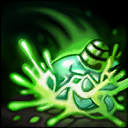

起手裝備
 長劍
長劍
殞落起手改蒐集者，接颶風、多明尼克、無盡，殞落移到第五；以範圍普攻和收尾先成形，再補對高生命前排的命中特效。 長劍起手保留；五成裝與獨立二、三級鞋線已分開，未照抄外站 Galeforce 鞋附魔欄。


五件成裝與鞋子分開列示；起手與核心是購買路線，不是額外佔用的成裝欄位。鞋子完成時機仍依對線壓力與回城金錢調整。


致命節奏配合離開偽裝的攻速窗口，兇蠻、斷切、血脈、骨甲保留；毒性爆發仍是收尾而不是唯一輸出。


預設閃現＋光盾，保住圖奇第一輪輸出；光盾在爆發落下前使用，不拿它代替躲避關鍵控制。
加點優先：E > Q > W
E > Q > W：三技毒層爆發先滿，一技次滿提高伏擊窗口；原序列保持合法。
普攻使目標感染死亡毒液並持續受到真實傷害，可疊加多層；三技會依層數造成額外爆發。
有後續版本調整的項目以較新數值為準；未列出者不代表完整技能成長表。
進入偽裝尋找輸出位置，現身後獲得短時間攻速；現身不再讓普攻一次疊兩層毒。
有後續版本調整的項目以較新數值為準；未列出者不代表完整技能成長表。

投擲毒區提供視野與緩速，區域持續期間逐秒疊毒。
有後續版本調整的項目以較新數值為準；未列出者不代表完整技能成長表。
對範圍內中毒目標造成爆發，疊毒決定額外傷害；施放前需有中毒目標在有效範圍內。
有後續版本調整的項目以較新數值為準；未列出者不代表完整技能成長表。
短時間提高物攻與攻擊距離，普攻轉為可穿透直線上多名敵人的弩箭，是團戰範圍輸出核心。
有後續版本調整的項目以較新數值為準；未列出者不代表完整技能成長表。
保留手機版現行毒層敘述，重置潛伏的連招須等毒性爆發冷卻恢復才能再次施放，不是擊殺重置所有技能。
1技進入偽裝 → 2技緩速疊毒 → 普攻疊毒 → 持續普攻 → 3技引爆
先用潛伏避開正面視野，接近後丟二技限制走位並取得脫離偽裝的攻速。打一輪普攻後用三技收尾，不必為滿層而追進危險區。
1技找側面角度 → 4技增加射程 → 穿透普攻 → 2技封走位 → 持續穿透 → 3技滿層引爆
從側面或前排後方開大，讓弩箭沿同一直線穿過多人。二技應放在敵方撤退方向，三技留到主要目標毒層足夠時再引爆。
3技收掉殘血 → 1技冷卻重置 → 進入偽裝轉位 → 2技留人 → 普攻疊毒 → 3技冷卻恢復後再引爆
受死亡毒液感染的敵方英雄陣亡後，潛伏會重置。先收掉殘血再重新偽裝換位，避免沿原本路線硬追下一個目標。 此重置僅指潛伏，三技仍有自己的冷卻；第二次引爆要等技能轉好。
圖奇對線射程與換血能力偏弱，先以補刀和血量為優先。敵方關鍵技能交掉後，可用潛伏從視野外接近，脫離偽裝取得攻速，再用虛弱之毒緩速、普攻疊毒並以毒性爆發收尾；沒有河道視野時不要為了疊滿毒層追過兵線。
蒐集者、芮蘭颶風箭成形後，和隊友推完線再用偽裝找側面射線，多明尼克第三件補穿甲。讓前排先接觸，再開大把普攻穿過多人；毒性爆發等主要目標毒層足夠時收尾，不獨自穿過無視野入口。
團戰不要過早現身，等待敵方陣形集中或關鍵控制交出後再開潛伏找角度。大絕期間以直線穿透最多人的方向走砍，虛弱之毒放在撤退路線；毒層接近滿層時施放三技完成爆發，活著打完整個大絕比強行繞到後排更重要。
伊澤瑞爾可位移躲穿透射線，煞蜜拉能擋弩箭，凱莎可跟隨標記反突進；先等關鍵防護和位移交掉，再從隊友附近開大。 威脅名單採同分路指南，較有利名單保留機制判斷並移除與威脅名單重疊者；現有輔助組合逐項複核技能互動後保留。
對局名單是機制與分路判斷，不代表固定勝率；需同時看雙方熟練度、兵線與陣容。
伊澤瑞爾可位移躲穿透射線，煞蜜拉能擋弩箭，凱莎可跟隨標記反突進；先等關鍵防護和位移交掉，再從隊友附近開大。
下列輔助配合以技能互動為依據。悠咪、露璐、米里歐仍可配合本頁打法；先確認對手輔助的控制與兩邊召喚師技能，單一射手對局不代表必勝。
能跟隨圖奇偽裝突襲並提供治療、加速，適合側翼進場與收割。
攻速與保命技能能強化圖奇開大後的穿透輸出。
增程與解控能讓圖奇在開大期間維持更安全的射擊距離。
依圖奇的穿透普攻、毒層與收尾爆發路線選擇替換；先看實際死亡與傷害不足原因。
依敵方前排成形調整
觸發：敵方前排已形成高生命或高防禦，正面輸出受阻。
圖奇保留前述五成裝加獨立鞋線；同一格不同情境擇一替換，不全部加購。
先保留預設穿甲核心，單一裝備格的調整不代表重買另一套。
保命格可提早
觸發：被同一輪突進秒殺，無法打出主要技能與普攻。
殞落王者之劍 → 守護天使
主要死亡原因是刺客或突進一次切入，且隊友能掩護復活位置。
殞落王者之劍整格換守護天使，犧牲部分穿透普攻、毒層與收尾爆發或持續防禦；復活後無人接應時先改善站位。
殞落王者之劍 → 魔提斯深淵
敵方主要擊殺來源是魔法爆發，且尚未裝另一件生命線裝備。
以殞落王者之劍換魔提斯處理魔法爆發；不把魔防誤當通用抗物理方案。
復活與魔法生命線處理的傷害不同，按實際威脅擇一；盾弓與魔提斯不重複保留。
先判斷控制能否解除
觸發：可解除的禁錮、暈眩等控制反覆中斷輸出。
殞落王者之劍 → 水星彎刀
可解除的控制反覆讓自己無法輸出，且閃現不能解決。
以殞落王者之劍換水星彎刀；主動要手動使用，不能解除擊飛或擊退，也不是舊版附魔。
水星彎刀是成裝，不佔鞋子升級；擊飛、擊退須靠預先走位或隊友保護。
治療已影響集火時
觸發：敵方持續治療抵銷集火，且團隊缺乏穩定重創。
多明尼克的問候 → 致死宣告
敵方治療或吸血持續影響勝負，隊友無法穩定施加重創。
致死宣告替換多明尼克；保留暴擊、穿甲與重創，不並排買兩件。
需要時先用死刑宣告過渡；不要把所有敵方英雄都當成必出重創的理由。
團隊無其他反盾者才承擔
觸發：大量反覆護盾持續阻止集火，且自己能穩定命中目標。
殞落王者之劍 → 巨蛇鋒牙
隊友無法施加反盾，且護盾確實抵銷主要輸出。
殞落王者之劍換巨蛇鋒牙會犧牲原末段功能；圖奇仍需保留主要輸出核心，只有單一小護盾時不換。
反盾屬團隊分工，不為一個小盾放棄整條普攻或技能路線。
7.3c差異核對：7.3c直接平衡項目屬符文大亂鬥；本頁保留已核對的峽谷配置。版本更新不等於每位英雄都必須更換Tier或裝備。查看整輪校正範圍。
本頁校正版本：7.3c；校正日期：2026-10-25。
參考來源標示版本：7.3c
本輪核對官方版本差異、道具/符文引用、五成裝與鞋線、逐級加點及情境替換一致性。Tier及玩法屬本站編輯判斷，不是官方排名或台服勝率；未公開的全級技能表不推算。
評級理由：7.3c 維持 B（本站判斷）。同分路參考維持 B；側翼穿透普攻有爆發上限，但對線偏弱、偽裝也不能保證安全進場。 7.3c 未改動此分路的英雄數值，沒有新證據只因版本號而升降。
Riot 官方資料 ↗ · Riot 官方資料 ↗ · Riot 官方資料 ↗ · Riot 官方資料 ↗ · Riot 官方資料 ↗ · WildRiftFire 參考攻略 ↗
7.3c 的直接英雄倍率改動屬符文大亂鬥；本召喚峽谷配置承接 7.3b。未把模式專屬增削轉為峽谷增削。
五件成裝、獨立鞋線、起手、核心、情境替換引用與一般符文列別均重新檢查；移除裝備不列入當前推薦。
歷史資料有後續調整時，以較新版本數值為準。
| 項目 | 調整前 | 調整後 |
|---|---|---|
| 基礎物攻 | 54 | 58 |
| 每級物攻 | 4.5 | 4 |
| 項目 | 調整前 | 調整後 |
|---|---|---|
| 每層傷害 | 1 / 2 / 3 / 4 / 5 + 2.5%魔攻 | 1 / 2 / 3 / 4 / 5 + 3%魔攻 |
| 滿毒提供攻速 | 中毒滿層：30 / 35 / 40 / 45 / 50% 攻速（等級 1 / 4 / 7 / 10 / 13）；持續 5 秒，可刷新 | 移除 |
| 項目 | 調整前 | 調整後 |
|---|---|---|
| 現身攻速 | — | 35 / 40 / 45 / 50% 額外攻速，持續 6 秒 |
| 現身後 3 秒疊毒 | 每次普攻 2 層 | 移除 |
| 項目 | 調整前 | 調整後 |
|---|---|---|
| 毒區規則 | 公告未列舊值 | 緩速 30 / 35 / 40 / 45% + 0.06% × 魔攻；區域提供視野、持續 3 秒，每秒疊毒 1 層 |
| 項目 | 調整前 | 調整後 |
|---|---|---|
| 直接引爆物理傷害 | 25 / 35 / 45 / 55 | 30 / 40 / 50 / 60 |
| 每層物理傷害 | 20 / 25 / 30 / 35 + 42%額外物攻+ 18%魔攻 | 20 / 25 / 30 / 35 + 35%額外物攻 |
| 每層魔法傷害 | — | 35%魔攻 |
| 三技施放條件 | — | 1200 距離內須有中毒目標 |
| 項目 | 調整前 | 調整後 |
|---|---|---|
| 冷卻時間 | 70 / 65 / 60秒 | 75 / 70 / 65秒 |
| 射彈速度 | 60 | 65 |